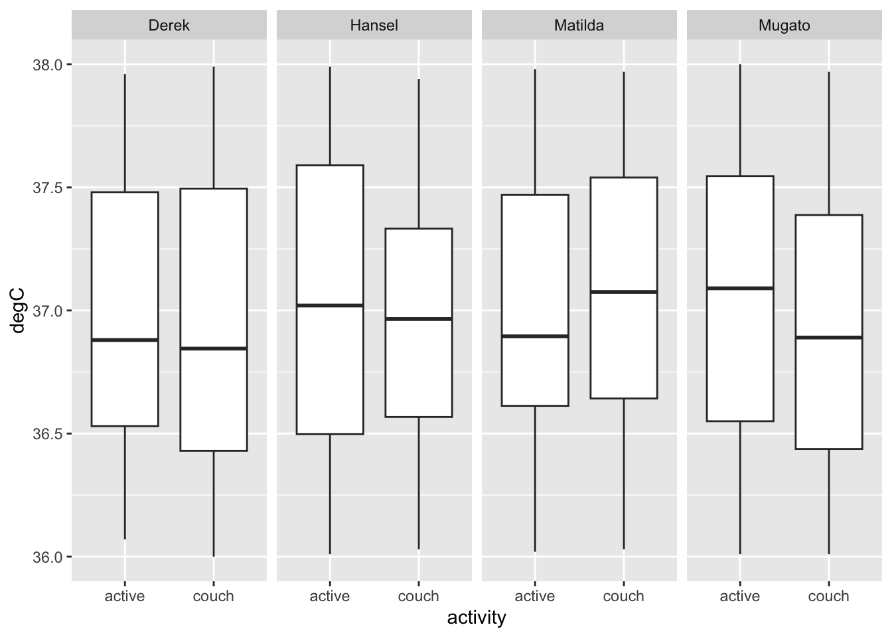

Module 5 Project
Introduction
Now that we have learned the basics of data analysis, visualization, and modelling. Let’s move on to how we collect data in the first place. So much of experimental work in organismal biology requires specialized equipment. Often, equipment is expensive or devices and instruments needed for the work aren’t commercially available. Because of the expense and unique requirements of instruments, organismal biologist often make their own. Prototyping instruments can be tedious and challenging, often requiring collaboration with engineers or other technical consultants. However, many simple sensor-based instruments that fit the requirements of researches can be built around Arduino, an open source, inexpensive prototyping platform.
In this project, we’ll proceed with prototyping a simple sensor, one that can very accurately record temperature. This project assumes you have worked through the the assigned readings and links and therefore understand how an Arduino Uno (or a clone) is programmed and how serial data are sent and received from an Arduino.
Set up
Materials
Assemble the following materials from your DaqPacks
- TMP36 precision linear analog temperature sensor
- Elegoo Arduino Uno clone
- variety of jumper or prototyping wires
Assembly and Programming
Assembly
Be sure to read Adafruit’s Using a Temp Sensor—it provides a good overview of this temp sensor and explicit instructions for assembling and programming an Arduino-based temperature recording system.
Let’s start with assembly. Simply wire the three pins of the TMP36 according the this diagram (ignore the photoresistor component):

Notice that the AREF pin is receiving 3.3v from the pin of that name. This changes the reference voltage from 5v, reducing noise and increasing precision. The diagram above doesn’t require a breadboard, but merely three male-female jumper wires for wiring the sensor, and a bit of prototyping wire or a male-male jumper for the AREF-3v connection.
Programming
Now program the Arduino by uploading the second sketch from Adafruit’s Using a Temp Sensor tutorial. If everything is in order—you’ve chosen the right port and board in Arduino IDE—you can now click on the serial monitor icon in the upper right of the IDE (or pres “cmd/ctrl+shift+m”) to see what data are being printed from the microcontroller to your computer over the serial (USB) port. It should look something like this. If so, CONGRATS! You’re recording temperature data!

This is great, but as a scientist, you’re probably building this instrument to record temperature over some length of time. Thus, reporting when, relative to the start of the experiment, the temperature was recorded is important. Fortunately, recording and printing time to the serial connection is super easy. We can do this by adding a new variable currentTime and passing a time value in milliseconds to this variable in the void loop. First, add int currentTime; to the top of the sketch where the other variables are established. int establishes the variable as an integer, which is just fine because milliseconds is recorded as whole numbers. Second, add this to the void(loop):
//add line to record current time
currentTime=millis();
//add line to print current time
Serial.print("Time = ");
Serial.println(currentTime);This first line above records the time in milliseconds. The second and third lines print a prefix and the value for the current time. Notice there’s Serial.print() and Serial.println(). The later is identical to the former, however, Serial.println prints the value and then a new line.
An amended code looks something like this:
/* Sensor test sketch
for more information see http://www.ladyada.net/make/logshield/lighttemp.html
*/
#define aref_voltage 3.3 // we tie 3.3V to ARef
//TMP36 Pin Variables
int tempPin = A1; //the analog pin the TMP36's Vout (sense) pin is connected to
//the resolution is 10 mV / degree centigrade with a
//500 mV offset to allow for negative temperatures
int tempReading; // the analog reading from the sensor
int currentTime; // the current time when the Arduino is recording temp data
void setup(void) {
// We'll send debugging information via the Serial monitor
Serial.begin(9600);
// If you want to set the aref to something other than 5v
analogReference(EXTERNAL);
}
void loop(void) {
//add line to record current time
currentTime=millis();
//add line to print current time
Serial.print("Time = ");
Serial.println(currentTime);
tempReading = analogRead(tempPin);
Serial.println("Temp reading = ");
Serial.print(tempReading); // the raw analog reading
// converting that reading to voltage, which is based off the reference voltage
float voltage = tempReading * aref_voltage;
voltage /= 1024.0;
// print out the voltage
Serial.print(" - ");
Serial.print(voltage); Serial.println(" volts");
// now print out the temperature
float temperatureC = (voltage - 0.5) * 100 ; //converting from 10 mv per degree wit 500 mV offset
//to degrees ((volatge - 500mV) times 100)
Serial.print(temperatureC); Serial.println(" degrees C");
// now convert to Fahrenheight
float temperatureF = (temperatureC * 9.0 / 5.0) + 32.0;
Serial.print(temperatureF); Serial.println(" degrees F");
delay(1000);
}
Check in on the serial monitor. Notice that there’s now a new line (outlined below in red) that reports time in milliseconds:

Notice that the data are being printed about ever second (1000 ms) or so. This is because the the last line of the sketch in the void(loop) is delay(1000). The delay() function delays or stops the loop for a specified number of milliseconds.
OK, this much better, but, as we’ll learn in Module 2, data need to be parsed (i.e., arranged) in particular ways for a scientists to read data into a computer and then work with it. One of the standard parsing conventions or formats is comma separated values (.csv). If we can get our data to be printed to the serial monitor separated by commas, then we just have to copy the data from the the serial monitor and paste it into a text file. Later in the course, we’ll learn how to save the data to an SD card, but for now, let’s set up serial printing so that we can copy it.
To do this, we need to rearrange and add some Serial.print() commands to the void(loop) section. So rather than . . .
//add line to record current time
currentTime=millis();
//add line to print current time
Serial.print("Time = ");
Serial.println(currentTime);
tempReading = analogRead(tempPin);
Serial.println("Temp reading = ");
Serial.print(tempReading); // the raw analog reading
// converting that reading to voltage, which is based off the reference voltage
float voltage = tempReading * aref_voltage;
voltage /= 1024.0;
// print out the voltage
Serial.print(" - ");
Serial.print(voltage); Serial.println(" volts");
// now print out the temperature
float temperatureC = (voltage - 0.5) * 100 ; //converting from 10 mv per degree wit 500 mV offset
//to degrees ((volatge - 500mV) times 100)
Serial.print(temperatureC); Serial.println(" degrees C");
// now convert to Fahrenheight
float temperatureF = (temperatureC * 9.0 / 5.0) + 32.0;
Serial.print(temperatureF); Serial.println(" degrees F");
. . . let’s ditch the prefixes and print some commas. Notice the last serial print command is Serial.println() to start a new line before the next data are printed.
//add line to record current time
currentTime=millis();
//print current time
Serial.print(currentTime);
//print a comma
Serial.print(",");
tempReading = analogRead(tempPin);
Serial.print(tempReading); // the raw analog reading
// converting that reading to voltage, which is based off the reference voltage
float voltage = tempReading * aref_voltage;
voltage /= 1024.0;
// print out the voltage
Serial.print(voltage);
Serial.print(",");
// now print out the temperature
float temperatureC = (voltage - 0.5) * 100 ; //converting from 10 mv per degree wit 500 mV offset
//to degrees ((volatge - 500mV) times 100)
Serial.print(temperatureC);
Serial.print(",");
// now convert to Fahrenheight
float temperatureF = (temperatureC * 9.0 / 5.0) + 32.0;
Serial.println(temperatureF);
Upload the sketch and have a look at the serial monitor. Notice that we have data for milliseconds, voltage, temp in °C, and °F, all separated by commas. That is, we have comma separated values (.csv)! There’s just one problem with this—unless you knew the inner workings of this sketch, you wouldn’t know which data were which. Is the first value time or voltage? The second voltage or °F? Etc., etc. Printing a header at the beginning of the program is the solution. After this, the header and data can be copied and pasted to a text file and any computing operations that follow will logically parse and have a name for each column or position in the series of data.
Here’s how to proceed. Merely print some header/column names in the setup(void). The setup(void) is a part of the sketch where you ask the microcontroller to do something once and before void(loop) commences, a perfect place to print the header to the serial port.
Serial.println("ms,v,degC,degF");After adding this and uploading the modified sketch, the serial monitor should now print a header (i.e., column names) and then the data like this:

This new modified Arduino sketch follows here:
/* Sensor test sketch
for more information see http://www.ladyada.net/make/logshield/lighttemp.html
*/
#define aref_voltage 3.3 // we tie 3.3V to ARef
//TMP36 Pin Variables
int tempPin = A1; //the analog pin the TMP36's Vout (sense) pin is connected to
//the resolution is 10 mV / degree centigrade with a
//500 mV offset to allow for negative temperatures
int tempReading; // the analog reading from the sensor
int currentTime; // the current time when the Arduino is recording temp data
void setup(void) {
// We'll send debugging information via the Serial monitor
Serial.begin(9600);
// If you want to set the aref to something other than 5v
analogReference(EXTERNAL);
Serial.println("ms,v,degC,degF");
}
void loop(void) {
//add line to record current time
currentTime=millis();
//print current time
Serial.print(currentTime);
//print a comma
Serial.print(",");
tempReading = analogRead(tempPin);
Serial.print(tempReading); // the raw analog reading
// converting that reading to voltage, which is based off the reference voltage
float voltage = tempReading * aref_voltage;
voltage /= 1024.0;
// print out the voltage
Serial.print(voltage);
Serial.print(",");
// now print out the temperature
float temperatureC = (voltage - 0.5) * 100 ; //converting from 10 mv per degree wit 500 mV offset
//to degrees ((volatge - 500mV) times 100)
Serial.print(temperatureC);
Serial.print(",");
// now convert to Fahrenheight
float temperatureF = (temperatureC * 9.0 / 5.0) + 32.0;
Serial.println(temperatureF);
delay(1000);
}Saving Data from the Serial Monitor
In future projects, we’ll write data to an SD card. But, saving your data for now can be as simple as copying the data printed to the serial monitor and pasting it into a text file. The code we’re working with produces comma-separated values for easy reading into analysis software, like R.
Be sure to copy your data into a text file, not a Word document or Excel. I suggest using a free test editing like BBedit (for Mac) or Notepadd++ (for Windows).
When saving data in a research project, be sure to give the data a standard and informative file name. This is essential for saving data. For instance, say we were studying the effect of exercise on body temperature in four human subjects: Derek, Hansel, Matilda, and Mugato. Imagine that we measured body temperature over 100 seconds, twice for each subject, once when they were inactive (on the couch) and once after 5 minutes of jumping jacks (active). A logical file-naming convention would be “Name_couch/active.csv”. So, say we have these 4 subjects and two experimental conditions, we’d have the following 8 files:
- “Derek_active.csv”
- “Derek_couch.csv”
- “Hansel_active.csv”
- “Hansel_couch.csv”
- “Matilda_active.csv”
- “Matilda_couch.csv”
- “Mugato_active.csv”
- “Mugato_couch.csv”
Giving files a name describing the experiment (who and condition in this case) is an easy way of storing metadata (data about the data). For any subsequent analysis, we can pull the metadata from the file name and store our data with these conditions stored as columns. If we consider loading data with R, the power of a for loop because apparent. Using a for loop, we can iteratively load each data file, strip the metadata, and store both in a table. In this example, such a loop might look like this:
library(tidyverse)
dat.f <- list.files(pattern = "couch|active.csv") #find the files
dat.l <- list() #make an empty list
for(i in dat.f){
met.dat<- unlist(strsplit(i,"_")) #split of the filename string
who <- met.dat[1] #store the first element
activity <- gsub(".csv","",met.dat[2]) #store second element, dropping CSV with gsub()
dat.l[[i]]<- read_csv(i)%>%
mutate(who=who,activity=activity) #read, then store data with additional columns of metada in list as position unique to i
}
dat <- do.call(rbind,dat.l) #combine the list into table
dat%>%
ggplot()+geom_boxplot(aes(x=activity,y=degC))+facet_grid(.~who) #plot to see what we get
A workflow like this, formulated around standardized file names containing metadata, is eminently scalable. Eight or a 1000 files, this approach works well.
Project Report
In this project report, we’ll mirror the process of future projects and reports in Phase II and III of the course. Specifically, we’ll define a question, get data with a prototyped Arduino-based sensor and data-acquisition system, analyze and visualize it in R, and answer the question in an R Markdown report. For this report, we’ll simply ask Does body temperature vary in human subjects according to activity level?.
To answer this question, use your new Arduino temp sensor to record your body temperature for a 100 s while sitting on the couch (or during some other calm activity—but make sure each group member does the same thing!) and after 5 minutes of doing jumping jacks. Record axillary temperature axillary by putting the sensor in your armpit.
Make sure, in your project, you:
- Record data from the active and inactive conditions.
- Save data from the serial monitor via copy and paste operations, giving each text file a descriptive, standardized file name containing metadata.
- Combine all data from your team into one table.
- Plot mean temperature +/- 1 standard deviation, focusing on the comparison of activities between subjects.
This report will require you to submit an .Rmd with HTML output that includes all the sections required of future project reports. Keep each section short, including only 3-4 sentences. Here are some key components to include:
- Find and cite a study in the introduction that frames the question, i.e., what is known about the effect of activity on body temperature.
- Qualitatively assess the effect of activity on body temperature with a single concise figure in the results section. Be sure to include a short narrative of the findings.
- Find, cite, and comment on a study in the discussion that frames the results, i.e., are your result congruent or not with previous findings and why?
- In the author contributions section, include short, explicit statements of each team member’s role in executing the project.
Submit your .Rmd to the projects directory established for each team on GitHub. Submissions are due by 11:59 pm on October 11th.
Good luck!!